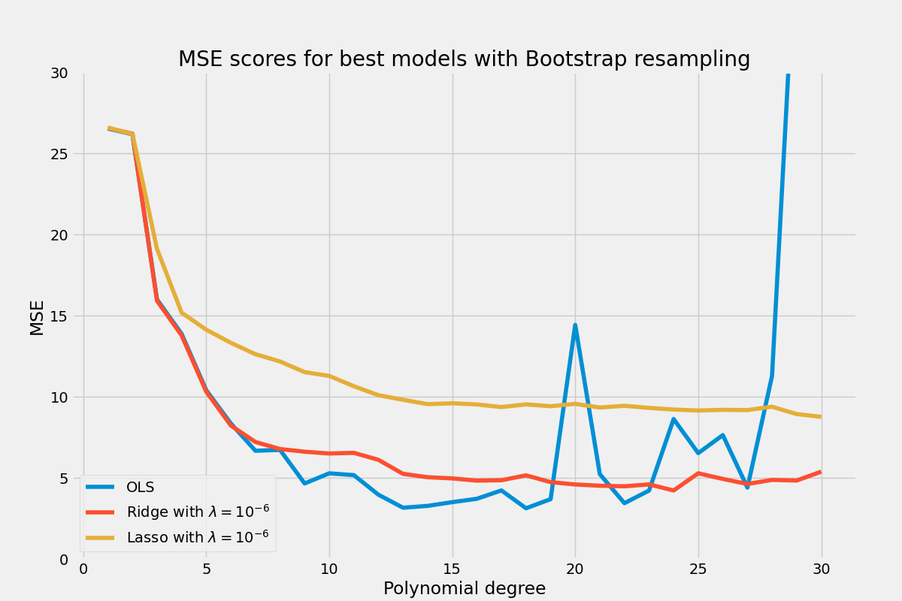
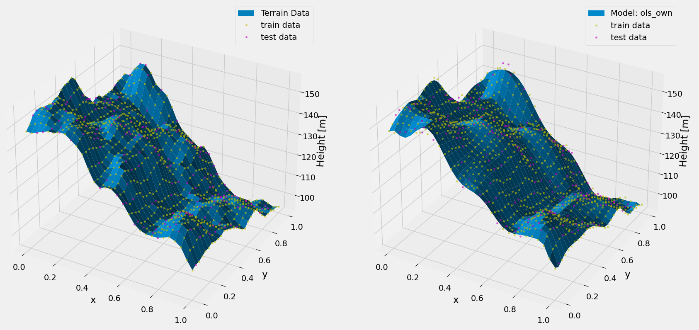
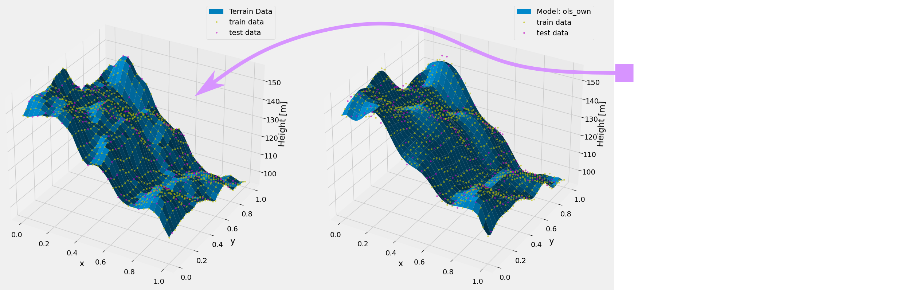
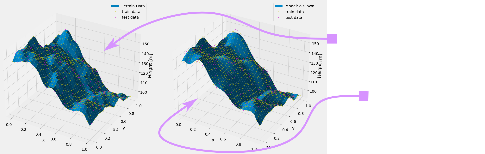
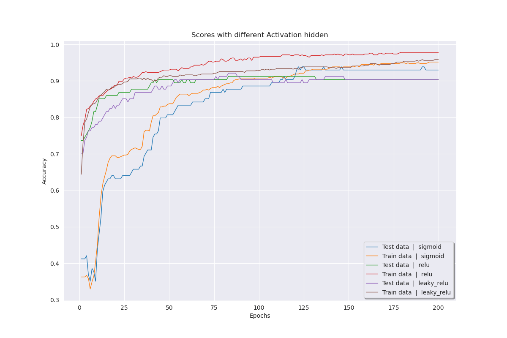
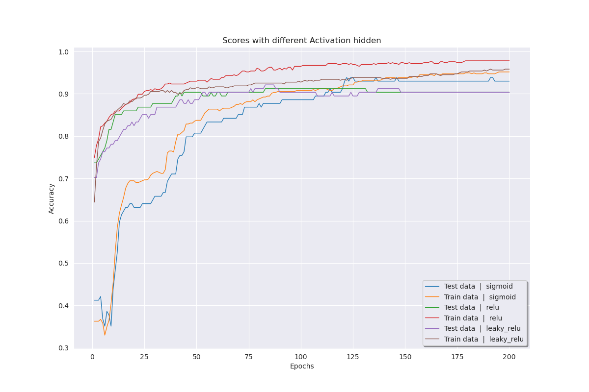
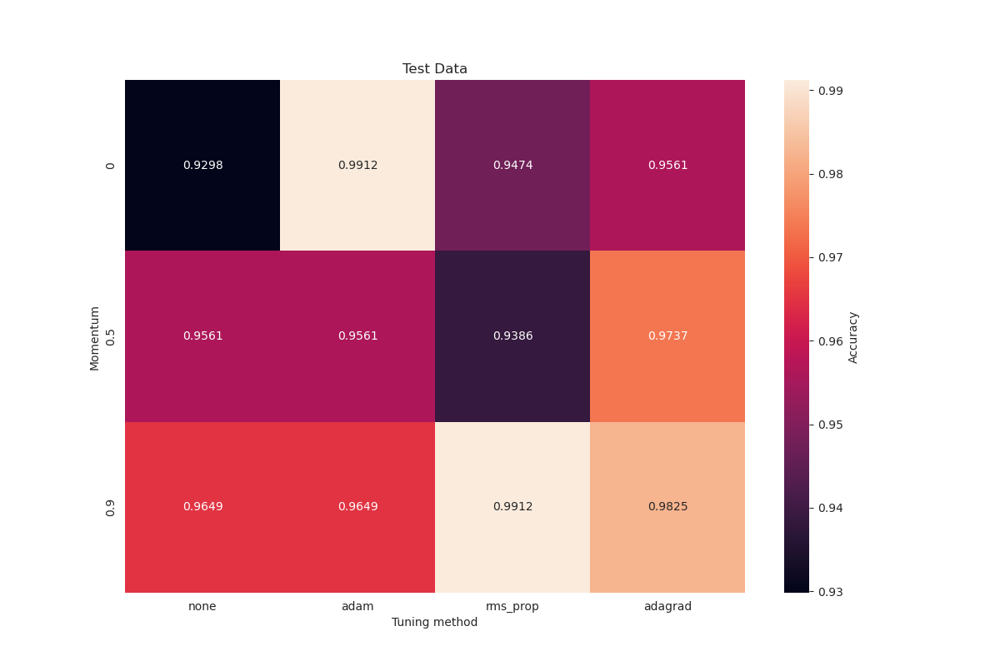
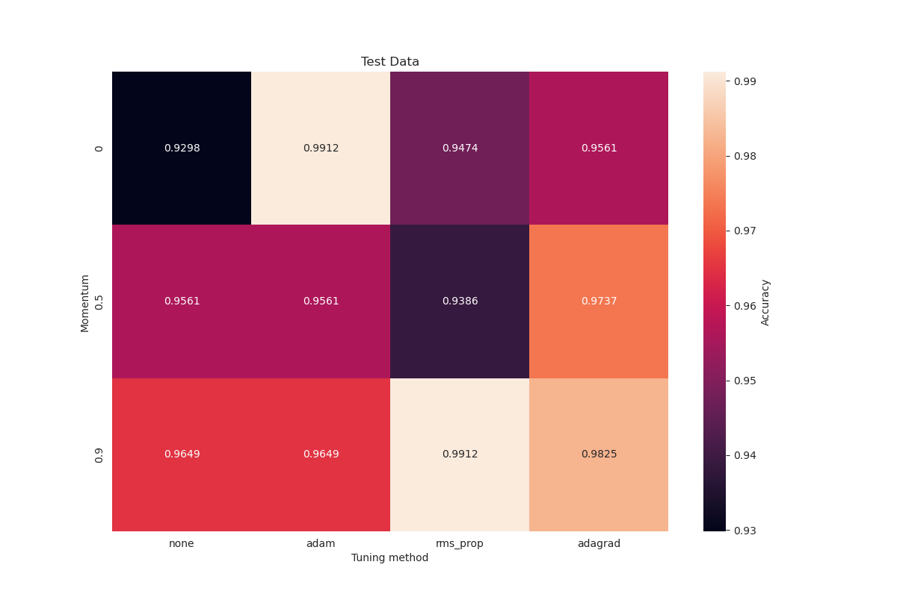

Hello, I'm Jens
Allow me to introduce myself.During the course of my physics studies, I developed a strong foundation in numerical analysis and modelling with Python. Feel free to check out some of my Data Science projects on the next slides, where i developed my own Machine Learning code.
Project 1 - OLS, Ridge and Lasso Regression





Project 2 - Feed Forward Neural Network (FFNN)
- In this project we did develop our own Feed-Forward Neural Network (FFNN) code.
- This project was an exercise in tuning and finding the optimal hyper parameters for binary classification on the Wisconsin Breast Cancer dataset.
We did rigorus testing of different activation fuctions on the hidden layers
(sigmoid, RELU and Leaky RELU),


, different tuning methods (manual, adagrad, rmsprop, adam) and momentum, $ \lambda $


- different bias initializations,
- different learning rates and batch sizes
- and different number of hidden layers and nodes.
After tuning the network with the following parameters:
| Parameter | Value |
|---|---|
| Learning rate, $\eta$ | 0.001 |
| # of hidden layers, d | 2 |
| # of nodes / hidden layer, w | 5 |
| Activation function (hidden layer) | Sigmoid |
| Momentum, $ \gamma $ | 0.9 |
| L2-regularization, $ \lambda $ | 0.01 |
| Tuning method | Adagrad |
| # of mini batches | 20 |
| Epochs | 300 |
We got an accuracy score of:
\[\begin{aligned}
Acc &= \frac{\sum_{i=1}^{n} I(t_i - y_i )}{n} \\ &= 0.9825
\end{aligned}\]
Project 3 - Random Forest and SVM
We implemented our own SVM and Random Forest classifiers. We evaluated the discriminative power of the classifiers on radiomics features extracted from medical image data (Positron Emission Tomography) with respect to different image reconstruction protocols.
Retro Fusion
I made this easy to setup and install retro console game launcher to easily be able to play all your favorite retro consoles in one place.
- I have a deep passion for acquiring new tools and technologies.
- The freedom of Linux and open-source software enables me to personalize and improve my developer environment, enhancing workflow and productivity.
- I am quite pleased with my 100% keyboard-driven workflow.
Feel free to check out my dotfiles.